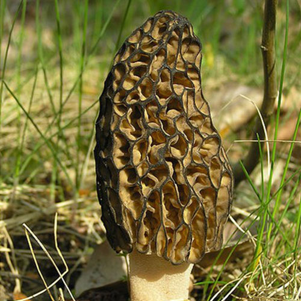
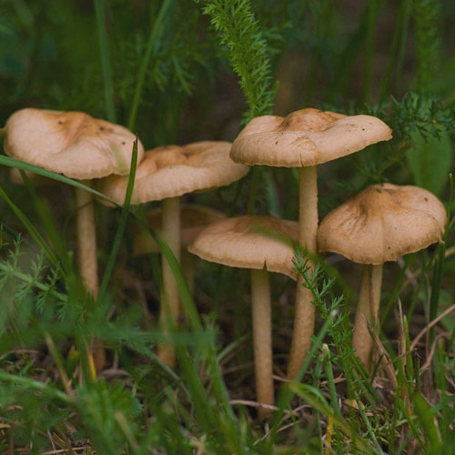
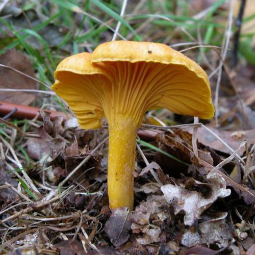
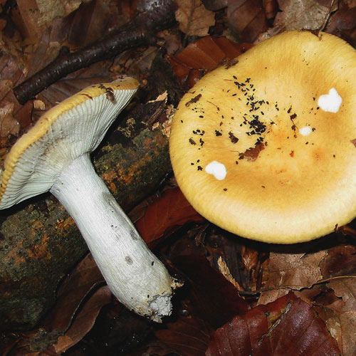
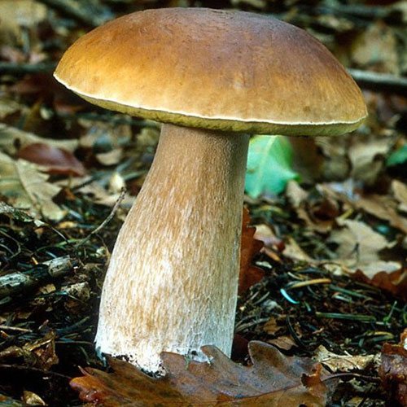
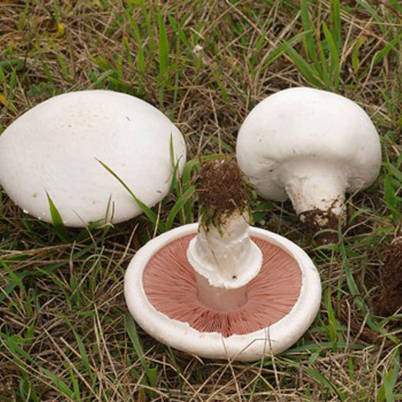
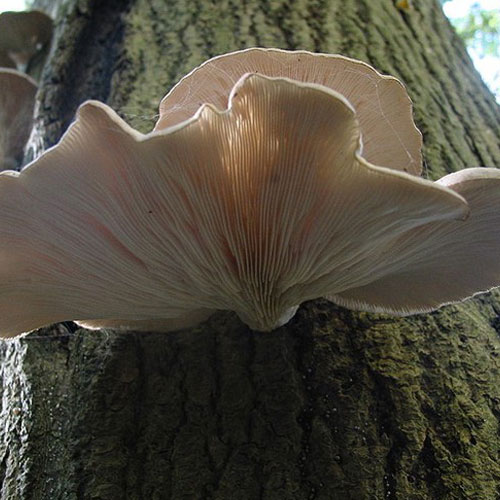
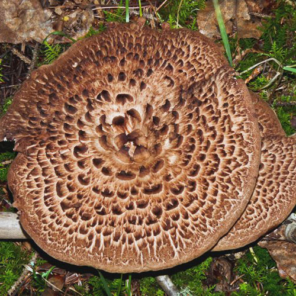
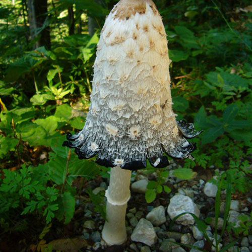

-

Black Morel
The Black Morel may be poisonous if consumed with alcohol. Do not confuse with the False Morel which is NOT hollow inside like the Black Morel.
-
Featured
Fairy Mushroom
Avoid specimens growing near highways which may contain toxic car exhaust compounds
-

Golden Chanterelle
Do not confuse with the False Chanterelle. The False Chanterelle has gills not ridges - it also tastes awful and causes stomach upset.
-

Golden Russula
The Yellow-gilled Russula has a fragile flesh and and a mild taste and an apricot-like odour.
-

King Bolete
One of the Noble Bolete mushroom family. These mushrooms grow quite large and are super tasty!
-

Meadow Mushroom
The Meadow mushroom is like a mushroom you might find at your grocer's. They have pink gills - throw away any specimens that do not have pink gills. With white mushrooms you need to be careful as there are some that are very poisonous.
-
Featured
Oyster Mushroom
Beware of the dangerous look-alike mushroom known as the "Angel Wings" mushroom - this poisonous mushroom is white in colour and has no odour and grows on dead logs/stumps. The Oyster Mushroom is cream coloured and grows on trees and has a fruity odour.
-

Scaly Hedgehog
A mildly bitter mushroom with no odour. Do not confuse with the less palatable look-alike "Sarcodon Scabrous". The look-alike has a more reddish capwith scales that are not raised and also the look-alike's stem is bluish-black at the base.
-

Shaggy Mane
To prevent an inky-black resulting dish... be sure to boil the Shaggy Manes shortly after gathering them.